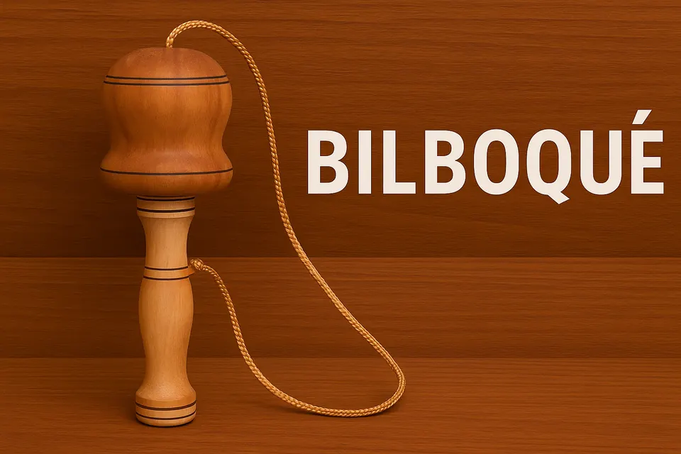

Bilboquê
Brinquedo tradicional de recepção
Lance a peça presa pelo cordão e tente recebê-la no copo ou encaixe do cabo com controle e ritmo.

O desafio
O que observar neste jogo
O bilboquê é uma família de brinquedos de copo e bola encontrada em diferentes lugares e épocas. Formas e nomes variam, mas o princípio é controlar uma peça presa por cordão e recebê-la em um suporte.
A prática melhora quando a pessoa observa trajetória e tempo, não quando apenas aumenta a força do lançamento.
Guia de ação
Como experimentar
- 1
Prepare o espaço
Verifique o cordão e mantenha distância de pessoas, lâmpadas, telas e vidros.
- 2
Faça um lançamento curto
Mova a mão de baixo para cima, mantendo a peça próxima ao eixo do brinquedo.
- 3
Acompanhe a descida
Posicione o copo sob a peça e amorteça a recepção com um pequeno movimento para baixo.
- 4
Ajuste uma coisa por vez
Compare altura, direção e tempo. Evite mudar todos os aspectos do movimento em cada tentativa.
Possibilidades educativas
O que a atividade pode mobilizar
Coordenação olho-mão
Relacionar trajetória visual e posicionamento do objeto.
Ritmo
Sincronizar lançamento, espera e recepção.
Aprendizagem motora
Usar o resultado de cada tentativa para ajustar a seguinte.
“Pode mobilizar” não significa “desenvolve automaticamente”. A experiência depende da proposta, da repetição, do diálogo e das condições de participação.
Mediação
Perguntas que mantêm o problema aberto
- A peça está subindo reta ou descrevendo um arco?
- O copo chega cedo ou tarde ao ponto de recepção?
- Que mudança pequena você testará na próxima tentativa?
Participação e acessibilidade
Formas de adaptar sem retirar o desafio
- Comece com trajetórias menores e permita segurar o cordão mais próximo da peça, sem enrolá-lo na mão.
- Use apoio para o braço ou pratique sentado quando isso aumentar estabilidade e segurança.
- Registre tentativas bem-sucedidas por descrição de estratégia, não apenas por quantidade.